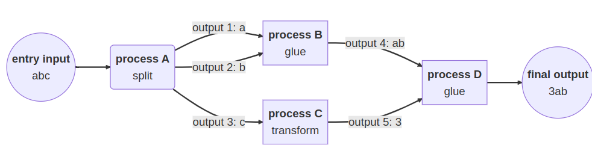

Nextflow Tutorial
Basic Structure of Nextflow

Many ways in which you can manipulate the data in channels. This is essential for feeding data in and out of processes.

Below you’ll find an example ‘Process’ inside Nextflow a ChIP-seq pipeline. For the peak calling step we are using MACS3. The basics we need are:
- Input
- Output
- Script
Other features we’ve added here are
- tag
- publishDir
- multiple outputs using ‘emit’
And theres many more features that are not in this process that you could add, including
process MACS3 {
tag "$key"
publishDir "${params.outdir}/macs3/$key", pattern:"*", mode: 'copy'
input:
tuple val(key), path(bamip), path(baminput)
output:
tuple val(key), path("*eak"), emit: peak
tuple val(key), path("*eak"), path(bamip), emit: peakbam
path("*.xls"), emit: excel
path("*"), emit: allelse
script:
"""
macs3 \\
callpeak \\
-t $bamip \\
-c $baminput \\
-n $key \\
-g hs \\
--call-summits
"""
}
Our First Script
For our first look into Nextflow, we will be using a simple script that counts the number of words in a fastq.
-
Copy the script to our work directory.
cp scripts/introduction/word_count.nf .Have a look inside
more word_count.nf -
Run the script!
nextflow run word_count.nf -
Change a parameter
nextflow run word_count.nf --input 'data/yeast/reads/ref2_*.fq.gz' -
Parameter changes as an input file instead
Copy this JSON file that has updated parameters for word_count.nf
cp scripts/parameters/wc-params.json . more wc-params.jsonRun this pipeline again but with the JSON file
nextflow run word_count.nf -params-file wc-params.json
NOTE:
- Parameters for Nextflow are used with
- - Parameters for your Nextflow script are used with
--